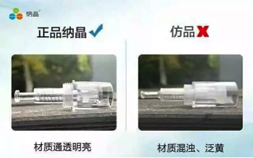

First publishment of Normative Product from Najing Officially
The best way to avoid from the fake: Please ensure the Najing brand from the company of Suzhou Natong, owning the regular product with patents.
The first one is the pinpoint of the regular product, the second one is the fake after magnify, thick pinpoint with big trauma.
Identification of the product:
1. different texture of chips
The chip from the fake one is mostly used in stainless steel or other bad material;
thick pinpoints with big trauma
The chip from the regular nano-crystal is made of single-crystal Silicon with 99.999% high purity.
Good biocompatibility, hardness, never break off and have no effect on 1.5 million times penetrating.
No pollution with any heavy metal elements such as Hg
2. different manufacturing process
The chips from the fake one are irregular shape;
The diameter of the fake chips equal to a human hair is similar with the ordinary micro-needle.
Low efficiency of penetrating, with big trauma, easily infect.
Incisive syringe needle, from the regular one is carved by nano-tech processing;
The diameter of the regular one is less than 1/1000 times of a human hair.
The process of penetrating is safe, high efficient and has no trauma.
3. different plastic material
The chips from the fake one are often used with cheap back-plastic material which have the risk of cross-plastic pollutions;
The chip from the regular nano-crystal has a bright texture.
